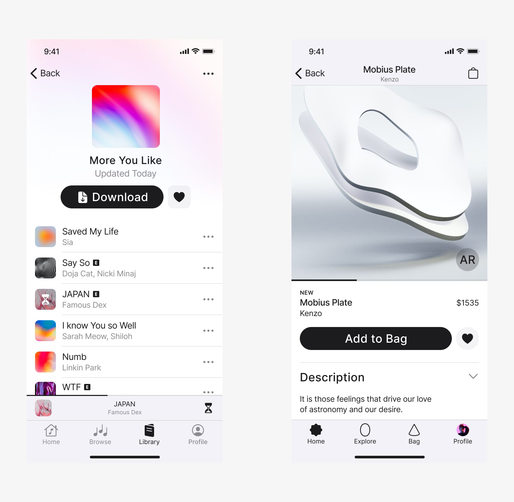
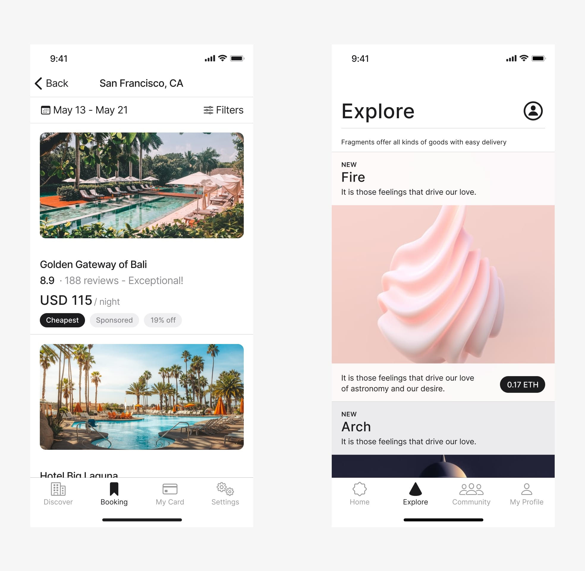

Jan Janeczek
Product Designer
Dots
Tool to help build community experience on Discord & Slack.

Aster
A platform powered by AI and focuses on people analytics to improve the overall human experience in the workplace.
Askyoyo
An AI assisted mobile-first tool to help hotels tailor your stay linked to your preferences and needs.
Buzzer
A new platform for video content creators.
Pludo
A platform where users connect with creators and experts.
Blind Cupid
A new matchmaking app designed for anyone in search of their better half.

Portrait Lens®
I trained and fine-tuned an AI model locally, resulting in approximately 500+ diverse portraits of people from around the world.
lil gratitude
An AI model provides daily insights for a more fulfilling life. Refresh the page, read, take notes, and meditate on the shared wisdom.
Sounds
An app uses AI models to tailor music to the user's current mood. This new approach makes listening to music more personal and intimate.
RareWave
A music player app that offers exclusive content from the artists, like interviews, live recordings, and podcasts.
100 Daily UI
A library of 100 app screens showcasing various iOS design patterns.

